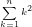

ABCのB問題くらいで出そうな問題を思いついたので忘れないうちに書いときます。
ページ下部に答えがあります。
実行時間制限: 2 sec
問題文
チャーリー君はチェス盤を作る仕事をしています。
ある日、徹夜明けで仕事をしていたチャーリー君は疲れからか間違えて8 * 8マスではなくN * Nのマスのチェス盤を作ってしまいました。
この時、チャーリー君はふと次のように思いました。
「このチェス盤のなかに正方形は何個あるのだろう?」
整数Nが与えられるので、チャーリー君の疑問に答えてあげてください。なお、答えの値は非常に大きな値になることがあるので、10^9 + 7で割ったあまりを出力してください。
制約
[Easy mode] 1 <= N <= 10 ^ 2
[Hard mode] 1 <= N <= 10 ^ 6
入力
入力は以下の形式で標準入力から与えられる。
N
出力
答えを10^9 + 7で割ったあまりを出力してください。
入力例1
3
出力例1
14
・選び方は以下の通り。
入力例2
1
出力例2
1
・元々が1*1の正方形のため、正方形の選び方は1通りしかない。
こたえ
解法1 四角形のパターンを全探索して正方形となるものを数える
「四角形の上/下/左/右の位置」をもとに全ての四角形を4重ループで考え、その中で正方形となるものをカウントしていく方法です。
以下が実装例です。
追記:MODで割るの忘れてました。すみません。
1つ注意が必要なのが、N * Nマスの座標は、(0, 0)から(N, N)まであるので、nを1増やして考えないといけないということです。
この方法だとO(N ^ 4)で、とても小さい値でしか間に合いません。Easy modeならACですが、Hard modeは確実に間に合わないでしょう。
解法2 Σを使って定数時間で解く
実はこの問題はΣでまとめられます。まずは入力例2の画像をもう一度見てみます。
すると、正方形の一辺の長さによってこのようにグループ分けができます。
一辺が1の正方形は9個、一辺が2の正方形の時は4個、一辺が3の正方形は1個...
そうです。実はN * NマスにあるK * Kの正方形の数は、(N - K + 1) ^ 2になっているのです。
何故なら、K * Kの正方形が動く余地は上下方向、左右方向にそれぞれN - K + 1だけあるからです。 例えば、先ほどの写真を見てみると3 * 3のマス目の中で2 * 2の正方形は2 ^ 2 = 4パターンありますが、これは動く余地が上下/左右方向に2あるからです。
つまり、答えは以下のようにまとめられます。
「結局やんけ！」となりますが、大きいほうの正方形から考えたら、選び方は1 * 1、2 * 2 ... N * Nとなるので結局そうなりますね。よって以下のようにO(1)で解くことができました。
参考:PUZZLEGRAMS p.4